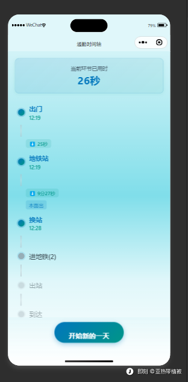
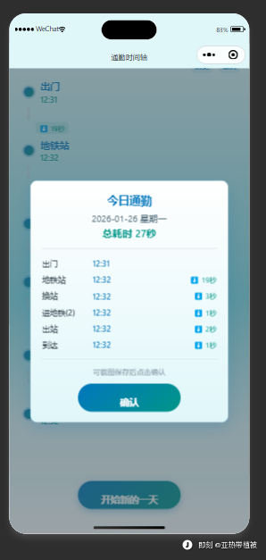
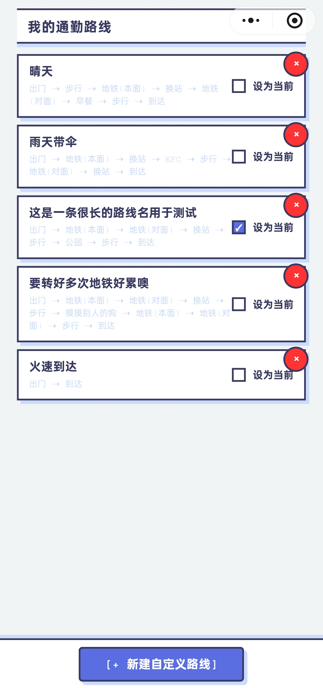
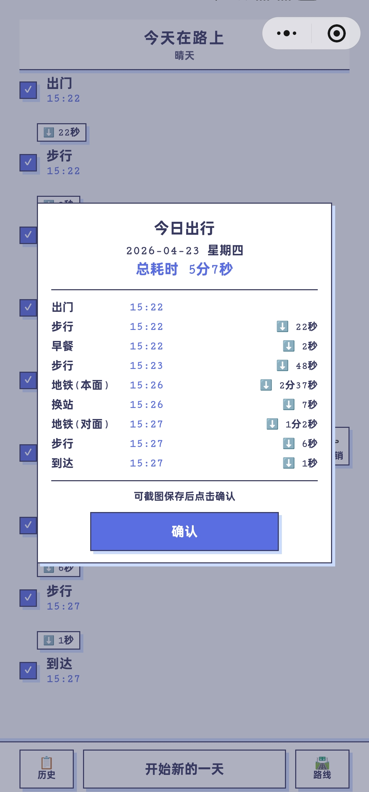
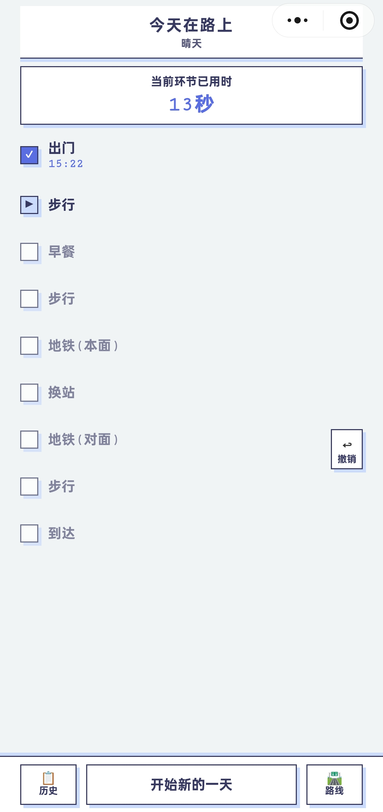

一款专注打工人早晨通勤的极简效率工具。 通过精细到节点的微操记录，为用户提供精准的出门「安心丸」。
项目的起点很朴素——我自己每天上班都会焦虑。不是怕迟到，是怕「不知道会不会迟到」。
备忘录手打太慢，普通计时器只给总时长，没法告诉我「现在到底哪个环节超了」。
于是我用 AI 辅助编程，从零独立开发了这款微信小程序——把通勤路径切成可控进度条，让每一步都有数据托底。
焦虑的本质是对不确定性的失控感。我需要的不是一个闹钟，而是一个能把不确定切成可控节点的工具——在路上安心发呆，到站看一眼提示就行。


| 设计决策 | 背后的理由 |
|---|---|
| 固定路线，不做自定义 | 降低技术复杂度，确保 MVP 快速可用，避免技术死角 |
| 历史记录不可改 | 符合「用完即走」原则，规避编辑态逻辑复杂度 |
| 弹窗式结算 | 强化完成仪式感，像打通游戏关卡——情绪设计 |
| 微信原生而非网页 | 愿意承受配置摩擦，换取最流畅的原生体验 |
| 手动截图，不做自动生图 | 规避跨设备渲染与相册权限 Bug，0 开发风险 |
不是因为用户抱怨，是因为我自己用着不够用。
真实通勤不是一条线，是一张图。单一路线的设计在概念验证阶段够用，但无法支撑「每天对比、选最优策略」这个真正的核心场景。



全程基于自然语言指令协同 Cursor 进行 AI 辅助编程。核心挑战不在于「写代码」，而在于准确描述产品行为、拆解逻辑边界、复现和定位 Bug——这与 PM 的核心能力高度重合。
| 维度 | V1 | V2 |
|---|---|---|
| 路线数量 | 固定 1 条 | 自定义多条 |
| 节点数量 | 固定 6 个 | 动态任意长度 |
| 路线管理 | 无 | 完整 CRUD |
| 历史记录 | 只读纯文本 | 支持情绪备忘输入 |
| UI 适配 | 固定布局 | 动态渲染 + 全面屏适配 |
| 文案基调 | 「上班 / 通勤」 | 「在路上 / 出行」 |